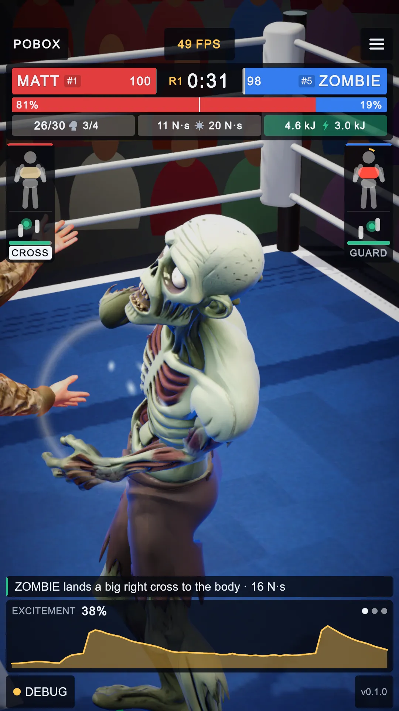
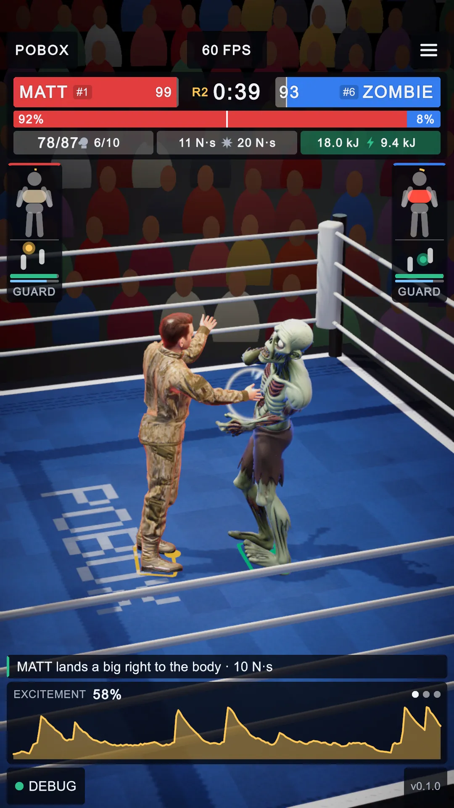
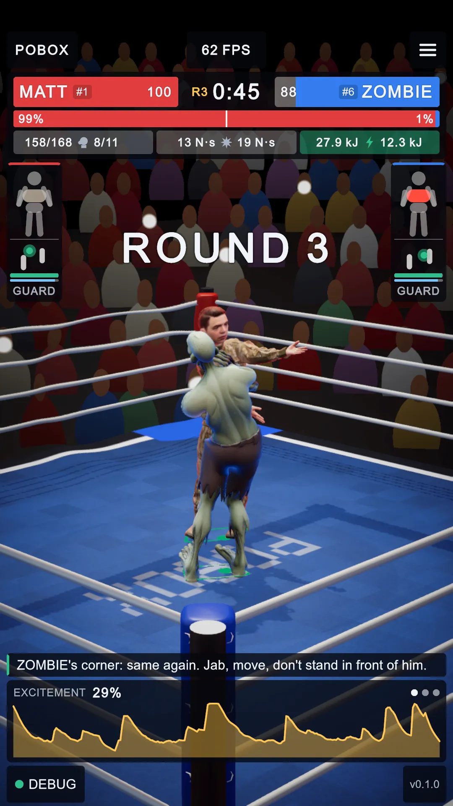
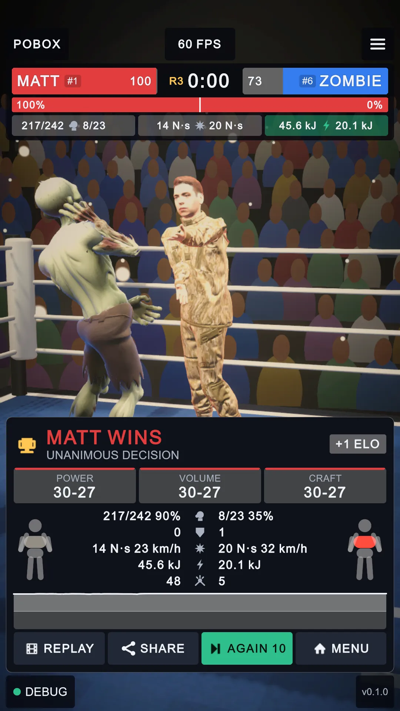
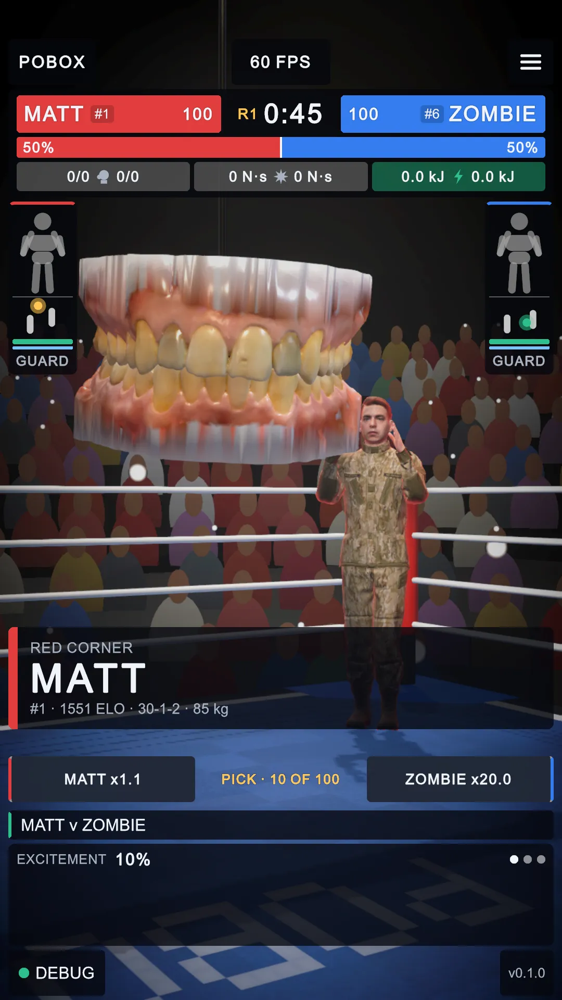
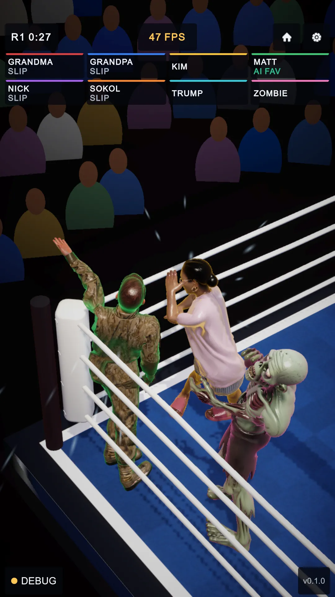
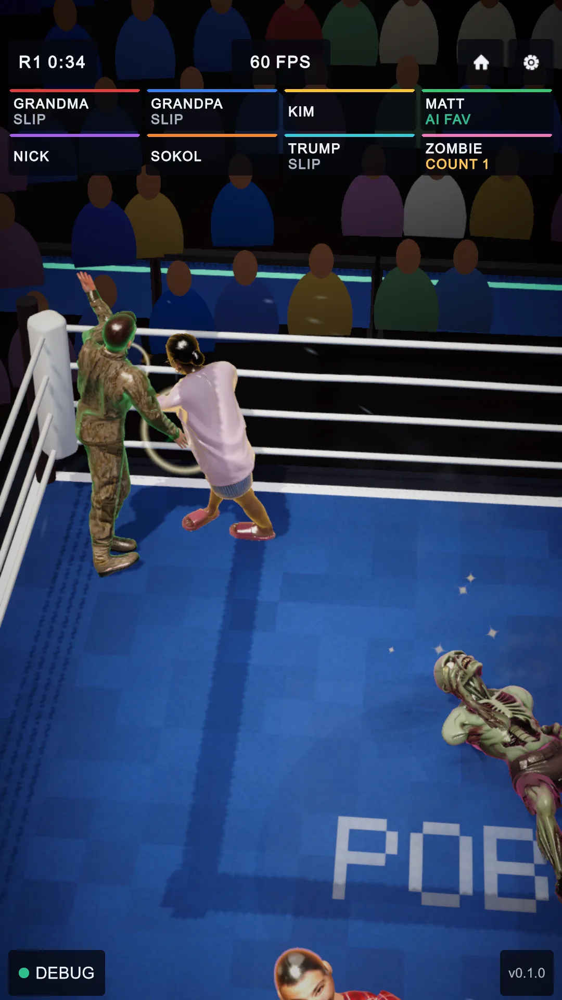

PoBox graphics and audio, 2026-10-16 evening
The owner's ten graphics and audio options, all done, in three commits. Several overlapped what the game already had (the table says what); for those only the missing part was built. Shots at 1080x1920 from the dev script; the before pictures are the do-all pass's, from this morning.
| # | Option | Already there | Built now |
|---|---|---|---|
| 1 | Shockwave and flesh ripple | a ring of light on the struck surface (ImpactVfx) | the picture bent in a ring from the punch (a full-screen URP pass, on only while it runs); a ring of light over the skin |
| 2 | Muscle load and fatigue | load and reserve on the collision shapes, in the X-ray | working joints glow amber through the skin itself (fighter overlay) |
| 3 | Collision fit check | the self-contact check (tasks A5) | tools/fit_check.py: every trained radius against the mesh's thickness, with the self-contact run; report |
| 4 | Venue in Blender | truss, lamps, apron, turnbuckles, corner props | ring steps, press row, two TV cameras, 28 barriers, a hung screen (Blender over MCP) |
| 5 | Lighting | cookies, reactive spots, follow-spots, knockdown spot | beams through the haze under the ring lights; the pressured boxer's rim brightened |
| 6 | Looks of the night | the count's grey, bullet time | walk-on, replay (depth of field, motion blur) and result looks |
| 7 | Friction sounds | foot scrape loop, leather pop on blocks | a squeak when a planted foot pivots (MjRing.FootSpin) |
| 8 | Glove whoosh | a fixed whoosh on every punch thrown | each glove's air following its measured speed, misses included |
| 9 | Crowd round the hall | one diffuse crowd bed | eight 3D sections; the scorer's half comes up |
| 10 | HUD and telemetry | frame, physics and brains ms; one type scale | GPU frame time in the readings; the last three hard-coded sizes are theme tokens |
1. The arena: the pressured rim, the ripple, the looks

BEFORE
AFTER 1 2- The rim: Zombie is on the ropes under pressure, and its corner's blue edge has come up to 2.4 times its usual strength (FighterSkin, eased over a third of a second).
- ON THE ROPES, the HUD's flag for the same moment; the commentary calls it after two seconds.

AFTER 3
AFTER 4- Screen ripple (held mid-ring for the shot): the ropes left of the punch are bent by the ring running out from where it landed. It lasts 0.45 s: plain in motion, faint in a still.
- The result look: warmer, brighter, the bloom up, so the stands' camera flashes flare.

AFTER 5
BEFORE (free-for-all)- The walk-on look: the edges darker (vignette) and a little more contrast while the boxers are announced.
2. The venue

AFTER 6- Barriers at 7 m, padded, with the theme's green stripe, between the ring and the stands. The steps, press row, TV cameras and the hung screen are in both scenes too, but the portrait broadcast shots are tight on the ring and seldom show them; they are in the free-for-all's wide opening, the walk-on's corner shots and the overhead.
Not shot: the light beams (they hang from 6 m, above every broadcast frame but the overhead; at the first setting they filled the hall with haze, so they were narrowed to the lamps' cores at a quarter of the brightness), the replay look (the next bout began before the capture finished; its weight reached 1 during the replay), and the sounds. Measured instead: the crowd sections lean from 0.121 behind the scorer to 0.059 opposite; pivots squeak; the glove air plays above 3.5 m/s; the GPU reads 1.5 ms a frame in the editor.